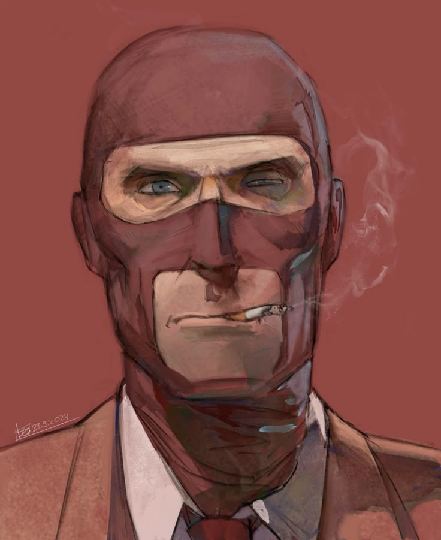

Origen: Francia
Salud: 125 HP
Velocidad: 107%
Originario de una región indeterminada de Francia , el Espía es una clase conocida por su afición a los trajes elegantes y los cuchillos aún más afilados. Usando una gama única de relojes de camuflaje , puede volverse invisible o incluso fingir su propia muerte , lo que le permite infiltrarse en las líneas enemigas con pocas posibilidades de ser detectado. Su Kit de Disfraz le permite suplantar a cualquier clase de cualquiera de los dos equipos. Con suficiente habilidad en el arte del engaño, el Espía puede engañar momentáneamente a los enemigos con su disfraz, infundiéndoles una falsa sensación de seguridad. Cuando llega el momento oportuno, puede emerger de entre la nada para asestar un golpe mortal, apuñalando por la espalda a su desprevenido "compañero". Una puñalada por la espalda con cualquiera de los cuchillos del Espía matará a la mayoría de los enemigos de un solo golpe, siempre que no estén bajo los efectos de ningún tipo de invulnerabilidad .
